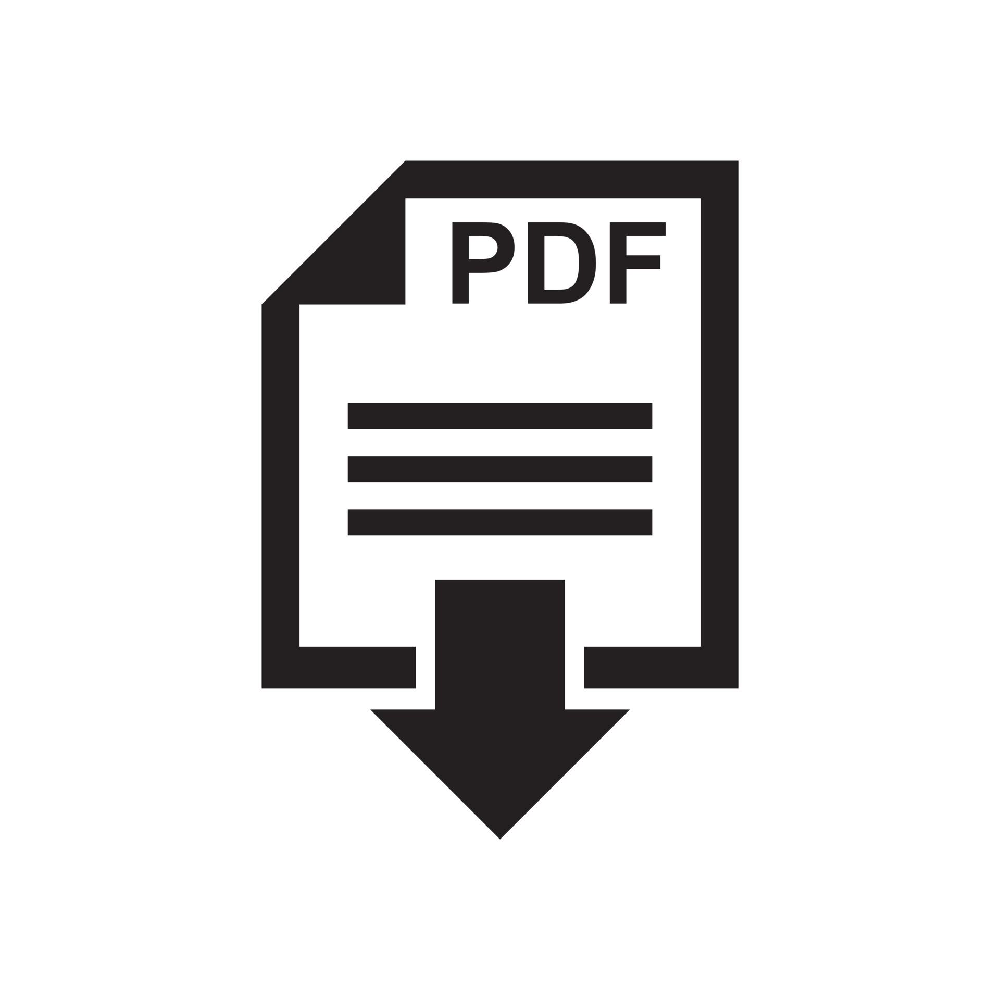

B.A. Honours (Humanities & Social Sciences)
Meta College - Eligibility
Eligibility
A student, currently appearing or passed with minimum aggregate marks at 10+2 level as mentioned below (category wise):
-
General Category : 60% in any four subjects (including English / MIL).
-
OBC Category : 54% in any four subjects (including English / MIL).
-
PwD / CW Category : 57% in any four subjects (including English / MIL).
-
SC/ST Category : Passing marks (including English / MIL).
Streams
Following Streams are available under the B.A. Honours (Humanities & Social Sciences) Course:
- Journalism.
- Art and Design
- Historical Tourism
- Counselling
Course Structure and Syllabus
- I Semester: Core Courses at CIC
- 3 Core Courses and 2 Ability Enhancement Compulsory Courses (AECC) to be taught at CIC.
- Semesters II to V: Courses at Colleges
- 3 courses (Core or Elective) in colleges and 1 Elective Course in project format will be taught at CIC in each Semester.
- VI Semester at CIC
- 3 Core Courses and 1 Skill Enhancement Course (SEC) will be taught at CIC.
- Total No. of Papers: 25 (Credits to be earned: 142)
- 24 papers: 6-7 Credits each.
- 01 paper: 2 Credits – Environmental Studies
Revised Course Structure and Syllabus
Click Below to downlaod B.A Course Structure

Click Below to downlaod B. A (H) Humanities & Social Sciences Syllabus
Faculty
- Ms. M. Khyothunglo Humtsoe (Program Coordinator and Assistant Professor in Psychology)
- Ms. Geetanjali Kala (Assistant Professor in Media and Communication Studies)
- Mr. Ashu Mishra (Assistant Professor in Hindi)
- Dr. Dorje Dawa (Assistant Professor in Environmental Engineering)
- Dr. Jogeswar Satchidananda Purohit (Assistant Professor in Biochemistry and Molecular Biology)
- Prof. Pankaj Tyagi (Physics, Innovations, Innovative Pedagogy, Thin Films)
- Dr. Asani Bhaduri (Assistant Professor in Molecular Biology)
- Dr. Saleem Mir (Assistant Professor in Geography)